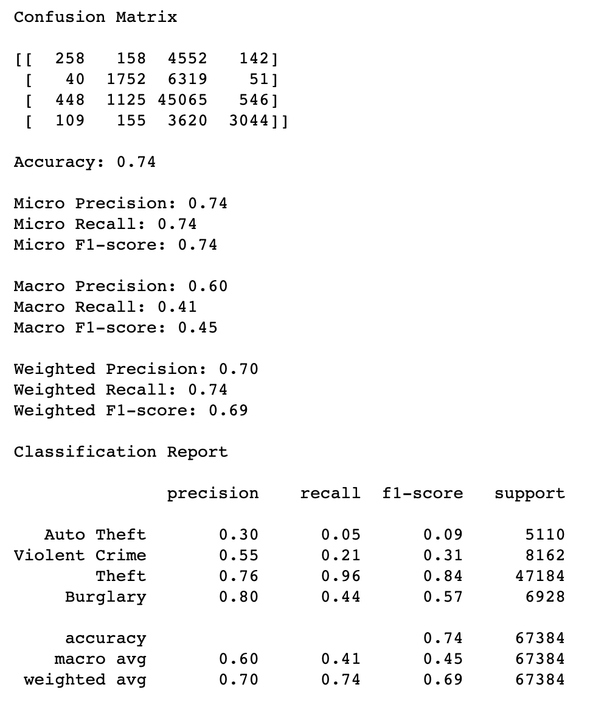

Machine Learning Model: Random Forest Classifier
To help us predict the type of crime, we combine features from our dataset that record details about the crime committed, such as the occurred time, time of week, hour, and census tract. Census tracts were used to join this data along with socioeconomic features, such as unemployment rates, per capita income, and estimates of people below the poverty line. Since these are directly tied to the census tract, we decided that it would be best to include these in our machine learning model since they can be very good predictors in determining what type of crime is committed. Seventy-five percent of our data was allocated towards training, while the remaining twenty-five percent was allocated for testing. So far, our random forest is using 1000 estimators. The model was trained using by using a StandardScaler instance for our features, and we analyzed the key differences when fitting the model with Austin Crime data alone and when merged with the Census Tract socioeconoomic data. We found that the accuracy for our model was improved using the Austin Crime data alone; when removing the socioeconomic features (unemployment, educational attainment, etc.), the predicitive accuracy of our model increases, suggesting that these socioeconomic factors are not very indicative for predicting crime type. We also looked at training the data with and without grouping some of the target categories, but seemed to not affect the predictive accuracy of our model.
Our current accuracy score for our best random forest classifier is 0.74. This seems to suggest fairly high accuracy and the further metrics of the classification report do not seem to indicate overfitting. We are looking at using Optuna to maximize our macro F1 and/or weighted F1 score, which currently score a 0.45 and 0.69 respectively. Given that our Austin Crime data alone has about 270,000 rows of data and 17 features, it seems to be faily reliable, but given class imbalances, we might benefit from maximizing the F1 scores with Optuna.
